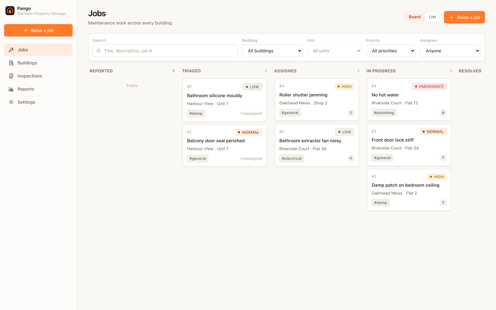
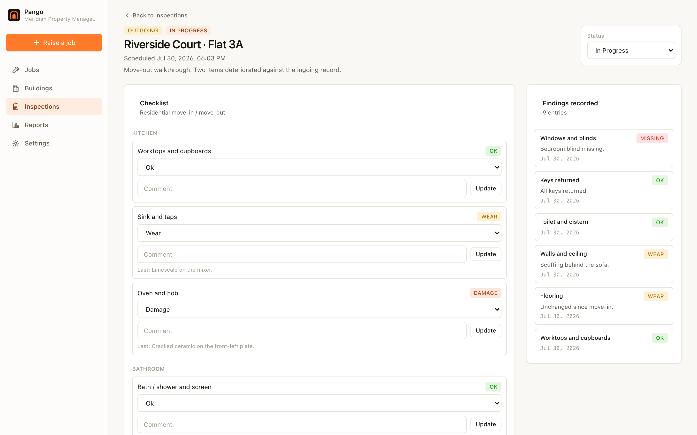
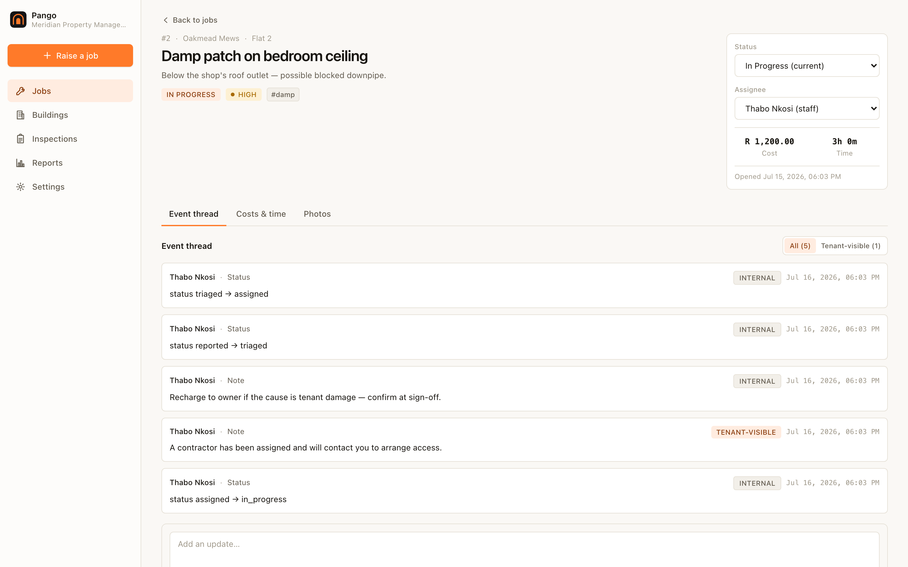
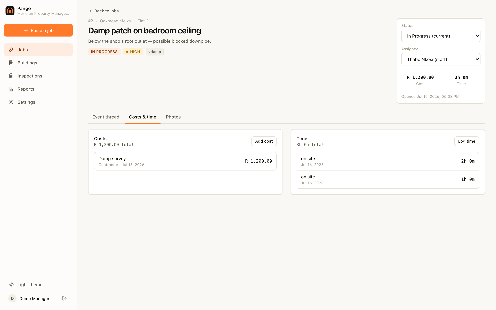
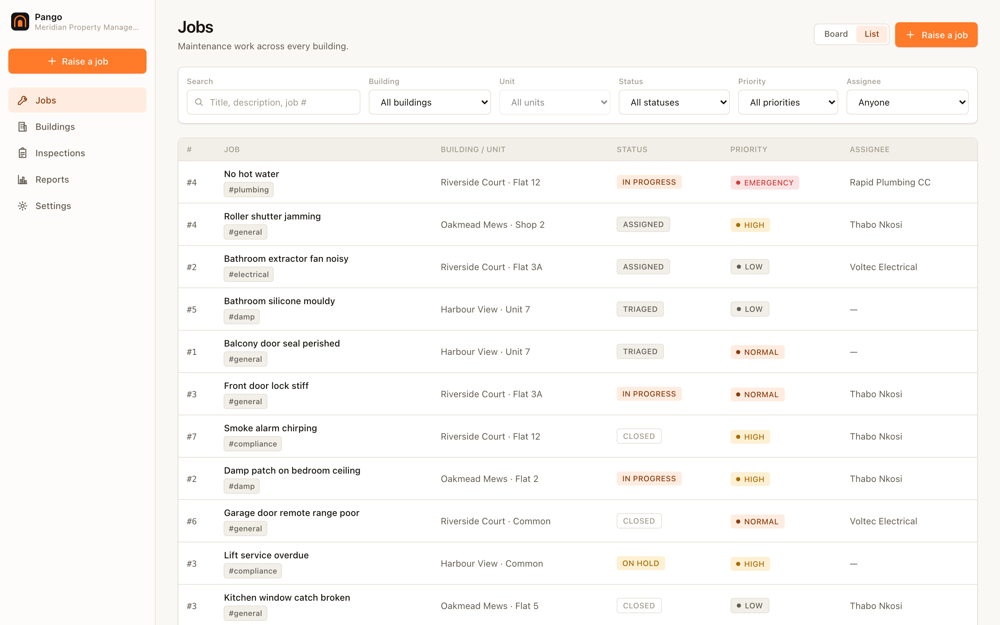
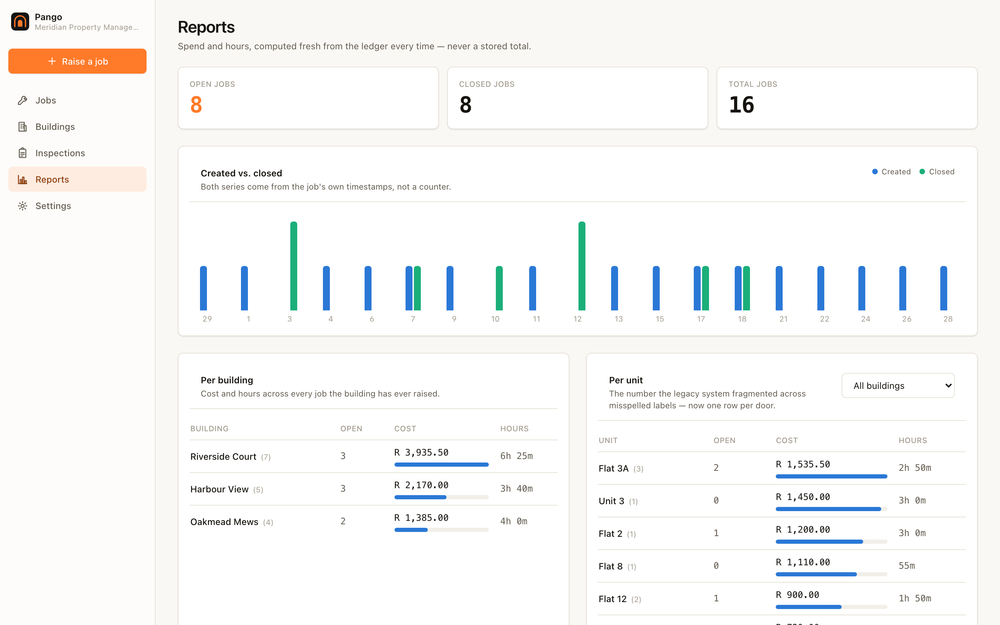
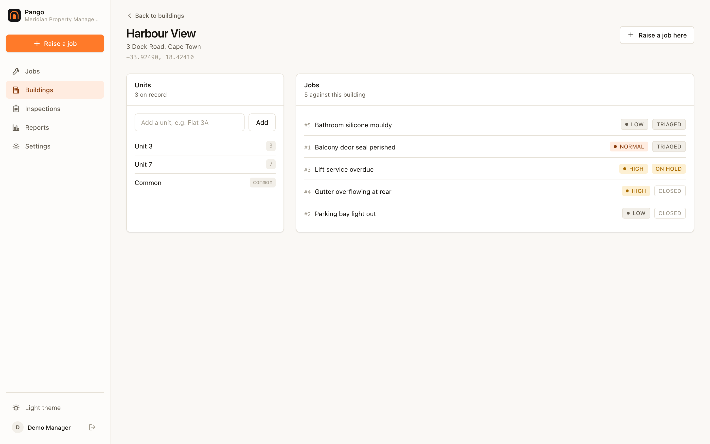
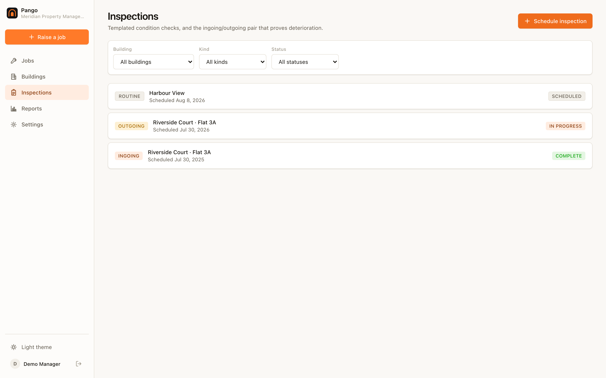
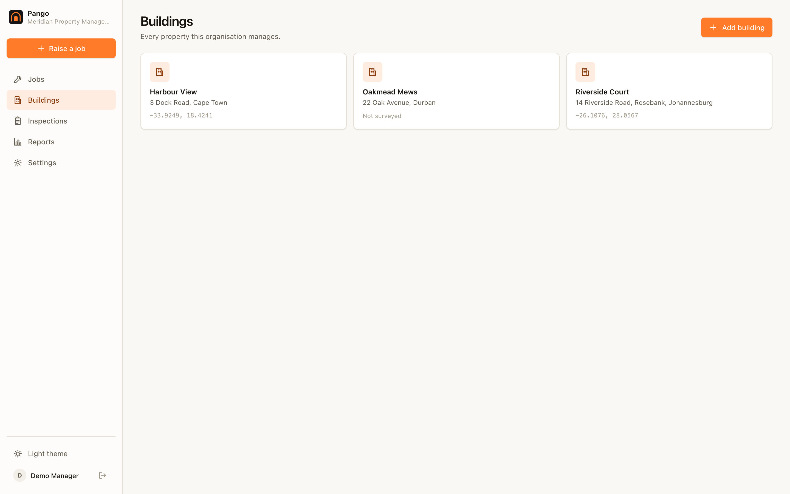
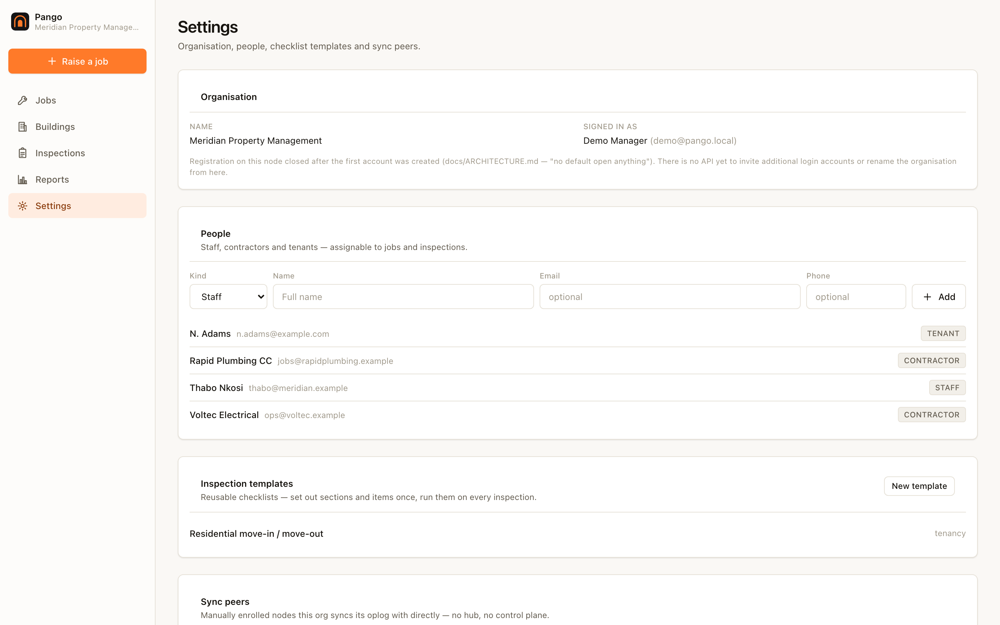

Know what happened in every unit — and be able to prove it.
Raise a job against a door, cost it as the work happens, close it. Then settle move-out damage with an ingoing/outgoing comparison instead of an argument.

Three things, done properly.
Pango is built for managing agents, landlords with a portfolio, body corporates and facilities teams. Not a ticketing system that happens to mention buildings.
01Raise it against a door
Every job belongs to a unit, not a free-text note. Flat 3A,
3A and flat 3a are one door — so your reporting
never quietly splits into three.
02Cost it as it happens
Materials and hours are added, never edited. Two people costing the same job on the same day add up instead of overwriting each other, and a correction is a negative line everyone can see.
03Walk it with a template
Reusable checklists by area and item, with a condition scale rather than a tick box, and photos attached where they matter. Findings are append-only — a second look adds an observation, it doesn't erase the first.
Costs land on doors, not on tickets.
Which door is eating your year?
Spend and labour aggregate against the building and against each individual unit, computed from the ledger every time you look rather than cached into a number that drifts.
That is the report that tells you a specific flat has had four plumbing call-outs in eight months and is not a maintenance problem but a plumbing problem — the one thing a per-ticket system can never show you.
A job with no unit is a job you cannot learn anything from later.
The move-out conversation, settled with evidence.
The tenant says the counter was chipped when they moved in. The agent says it wasn't. Both are sincere. Neither has anything to show.
The same template, run twice, diffed item by item.
Run a condition report at move-in and another at move-out. Pango lines them up and shows you what changed, in which direction, with both sets of photos side by side.
It does not decide who is right. What it does is stop the argument being about memory.
And it keeps “deteriorated” separate from “never captured on the way in”, so a missing baseline can never be laundered into a confident-looking claim against somebody's deposit.

Basements don't have signal.
Every screen keeps accepting work with no connection at all.
A contractor in a plant room. A manager walking a block with no coverage. The office line down for a morning. Conventional systems put a server in the middle of every write, so in each of those moments the work either stops or gets scribbled on paper and typed up later — badly, or never.
Pango nodes sync directly with each other when they can reach each other. When they can't, a shared folder, a NAS, or a USB stick carried between sites is a perfectly valid way to move the day's work.
A contractor can run their own node and be a real participant — not a login on somebody else's system that gets revoked when the contract ends.
Every shot below is the real thing.
Captured from the compiled binary in demo mode by npm run screenshots.
Nothing here is a mock-up or a render.
Working the board





Property records & inspections




Twelve surfaces, each in light and dark. The complete set — including every dark-mode shot — is in the screenshot index →
There is no hosted Pango. That is the point.
No free tier, no seat count, no account with us — because there is nothing to sell you. It is open-source software that runs on hardware you already have, and your data is a file you can copy.
One binary, one file
A single executable with the whole interface inside it, plus one SQLite file and a folder of photos. No database server, no queue, no object store. A laptop, an office NAS or a Raspberry Pi is a complete deployment.
It talks to nothing
A fresh install makes no outbound calls: no telemetry, no update check, no licence call, no font CDN. Every address it contacts is one you typed in yourself.
Leaving is a file copy
The database, the node's key and the attachments live in one directory. Back it up the way you already back things up. There is no export feature because nothing is locked in.
# try it with a seeded demo portfolio — nothing written to disk ./pango --demo # or run it for real: one file, loopback only, no cloud ./pango --db /var/lib/pango/pango.db
Running it on a rented box or behind a tunnel so a tablet on mobile data can reach it? That is a different threat model and it has its own chapter — cloud & tunnelled nodes →
The core is built and running: jobs, units, append-only costs and hours, reports, templated inspections and the ingoing/outgoing comparison. Every screenshot on this page comes from that binary. Peer-to-peer sync is implemented but has so far only been exercised by its own test suite rather than in the field. A tenant portal, photo attachment storage, recurring maintenance and compliance certificates are not built yet. The per-area breakdown is kept current in the status table, and a feature that silently does nothing is treated as worse than one that says it isn't finished.
Part of VulOS
Vulos publishes one thing: the OS. The Vulos OS, all of its apps — Pango included — and the app store are free and open source, dual MIT OR Apache-2.0. You self-host them, on a box you provision and pay for yourself. Vulos does not host boxes and does not bill for anything.
- Vulos OS — the web-native desktop shell that hosts the apps
- Diwan — documents, sheets, slides, PDF and whiteboards
- Vulos Files — file storage and peer-to-peer sharing
- Ephor — a self-hostable reachability broker your box dials out to
- llmux — sovereign AI gateway
Pango's role is the property maintenance and inspections app. It runs standalone, and it can be hosted as an app by the Vulos OS — the same binary, with the OS wiring identity and scoped storage in front of it. Those seams are optional by contract: a hard runtime dependency on any of them is forbidden.
Explore VulOS →